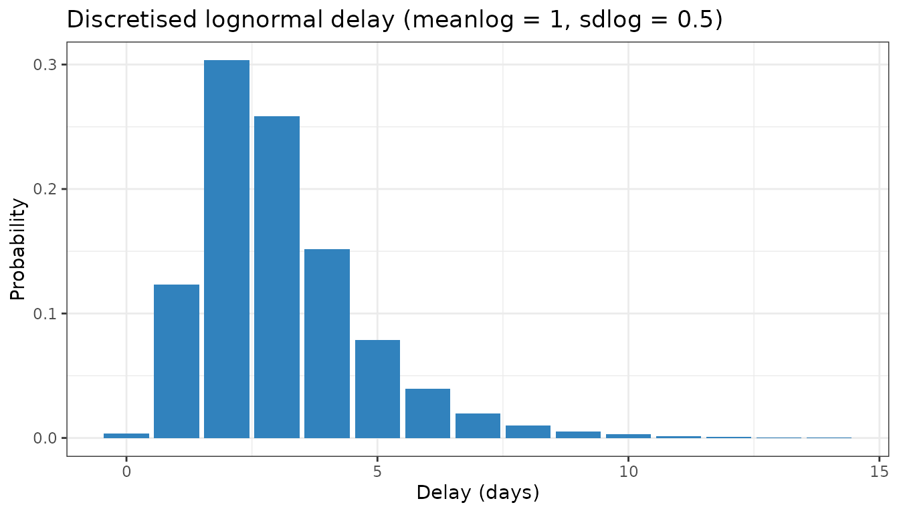

This vignette describes the parametric delay distributions that are
currently available in epinowcast and explains how they are
internally discretised.
##
## Attaching package: 'data.table'## The following object is masked from 'package:base':
##
## %notin%Available distributions
The currently available parametric delay distributions are continuous probability distributions with (up to) two parameters \(\mu_{g,t}\) and \(\upsilon_{g,t}\). The table below provides a link to the definition of each distribution, specifies how the parameters \(\mu_{g,t}\) and \(\upsilon_{g,t}\) are mapped to the parameters of the distribution (according to the referenced definition), and states the resulting mean of the distribution (before discretization and adjustment for the assumed maximum delay).
| Distribution | Parametrization | Mean |
|---|---|---|
| Log-normal | \(\mu=\mu_{g,t}\), \(\sigma = \upsilon_{g,t}\) | \(\exp(\mu_{g,t}+\frac{\upsilon_{g,t}^2}{2})\) |
| Exponential | \(\beta = \exp(-\mu_{g,t})\) | \(\exp(\mu_{g,t})\) |
| Gamma | \(\alpha = \exp(\mu_{g,t})\), \(\beta = \upsilon_{g,t}\) | \(\exp(\mu_{g,t})/\upsilon_{g,t}\) |
The log-logistic distribution was previously available but has been
dropped pending log-logistic support in primarycensored (epinowcast/primarycensored#321).
Discretisation and adjustment for maximum delay
In epinowcast, delays are modelled in discrete time and
with an assumed maximum delay (specified via the max_delay
argument). The continuous delay distributions must therefore be
discretised and adjusted for the maximum delay.
It is helpful to separate two distinct adjustments. The first is discretisation: turning the continuous delay into a probability mass over integer delays \(d = 0, 1, 2, \dots\), with each \(p_d\) defined for an infinite maximum delay so that \(\sum_{d=0}^{\infty} p_d = 1\). The second is conditioning on the maximum delay \(D\): restricting attention to delays \(d \le D\) and renormalising so that the truncated probabilities sum to 1, i.e. \(p^{\prime}_{d} = p_d / \sum_{j=0}^{D} p_j\). The first step is about how a continuous distribution becomes discrete; the second is about right truncation at \(D\).
Double interval censoring with primarycensored
epinowcast discretises the parametric reference delay
using the double interval censoring approach from the primarycensored
package[1]. This accounts for
the primary event window, the secondary (reporting) interval, and right
truncation at the maximum delay \(D\).
Let \(F^{\mu_{g,t}, \upsilon_{g,t}}\) be the cumulative distribution function of the continuous delay distribution. The primary event (e.g. infection) is not observed exactly but is assumed uniform over a window of width 1 day. Censoring the continuous delay by this primary window gives \[Q(t) = \int_0^1 F^{\mu_{g,t}, \upsilon_{g,t}}(t - s) \, \mathrm{d}s,\] the cumulative probability that the delay, measured from the start of the primary window, is at most \(t\). The secondary event is observed in a daily reporting interval, so the mass on an integer delay \(d\) is the increment of \(Q\) over that interval, conditioned on the maximum delay \(D\), \[p_{g,t,d} = \frac{Q(d + 1) - Q(d)}{Q(D)}, \qquad d = 0, 1, \dots, D - 1.\] The denominator \(Q(D)\) applies the right truncation, so the discretised probabilities sum to 1.
primarycensored evaluates \(Q\) with analytical solutions for the
supported distributions (the exponential is handled as a gamma with
shape one), and the Stan implementation is vendored directly from the
package. This is applied automatically to all available parametric
distributions (lognormal, gamma and exponential); no argument is needed.
See the primarycensored
documentation for the full derivation, including arbitrary primary
and secondary window widths.
The discretised mass function for a lognormal delay
(meanlog = 1, sdlog = 0.5) truncated at a
maximum delay of 15 days, obtained directly from
primarycensored::dprimarycensored():
dmax <- 15
pmf <- data.table(
delay = 0:(dmax - 1),
probability = primarycensored::dprimarycensored(
0:(dmax - 1), plnorm, pwindow = 1, swindow = 1, D = dmax,
meanlog = 1, sdlog = 0.5
)
)
ggplot(pmf, aes(x = delay, y = probability)) +
geom_col(fill = "#3182bd") +
labs(
x = "Delay (days)", y = "Probability",
title = "Discretised lognormal delay (meanlog = 1, sdlog = 0.5)"
) +
theme_bw()
The same primarycensored machinery underpins delay
handling elsewhere in the ecosystem. epidist estimates
delay distributions from individual line-list data, and EpiNow2::estimate_dist()
fits them from aggregated count data; both are powered by
primarycensored, with the main difference being the data
structure they expect. Estimating a delay with one of those tools and
then passing it to enw_reference() keeps the censoring
assumptions consistent across the workflow.